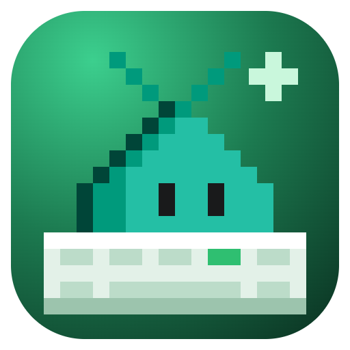

Blobby TypeType faster, with every finger at home.
A native macOS app for timed typing drills and untimed finger lessons, with Blobby cheering you on.
PRACTICE · EVERYDAY WORDS · 60S IN THE FLOW
SPEED64wpm
ACCURACY98%
TIME LEFT48sec
PERSONAL BEST61wpm
calm·focus·helps·you·type·fa ster·every·day·with·a·little·rhythm·and·a·lot·of·practice·one·word·at·a·time
⌨calm focus helps you type fax
LEARN FINGERS · 6. OPPOSITE-HAND SHIFT
J
Right index finger
Hold left Shift with your left pinky, tap J, then release.
1234567890-=
QWERTYUIOP[]
ASDFGHJKL;'
L ShiftZXCVBNM,./R Shift
Space · either thumb
US QWERTY · colors match the fingers
Press ⌘L to learn which finger to use, and ⌘R to start another round

Timed drills
Words, punctuation, or code for 30, 60, or 120 seconds, with live WPM and accuracy.

Finger lessons
Six untimed lessons, from the F and J anchors to opposite-hand Shift.

Yours, offline
Build it with bash build.sh. No dependencies, no network, and your results stay on your Mac.